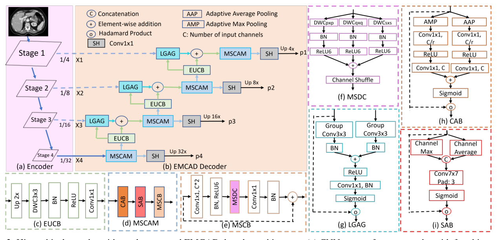
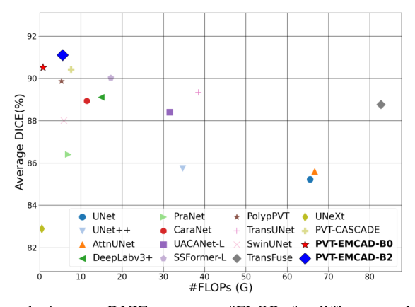
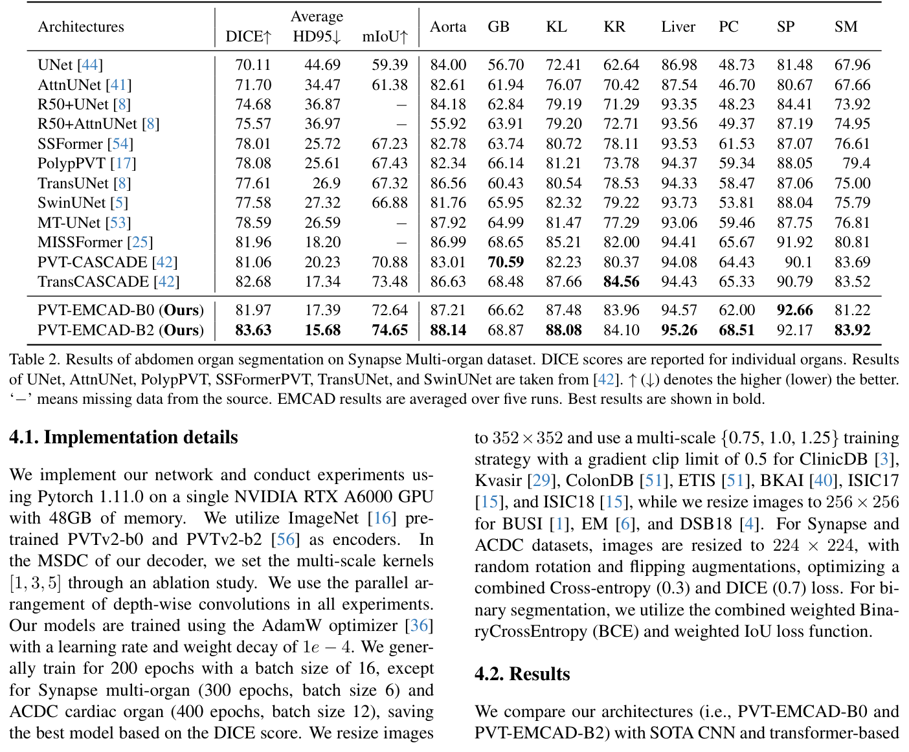
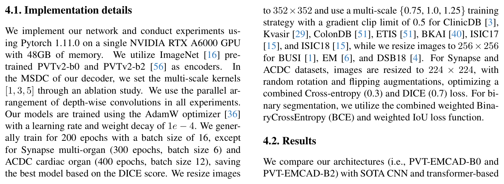
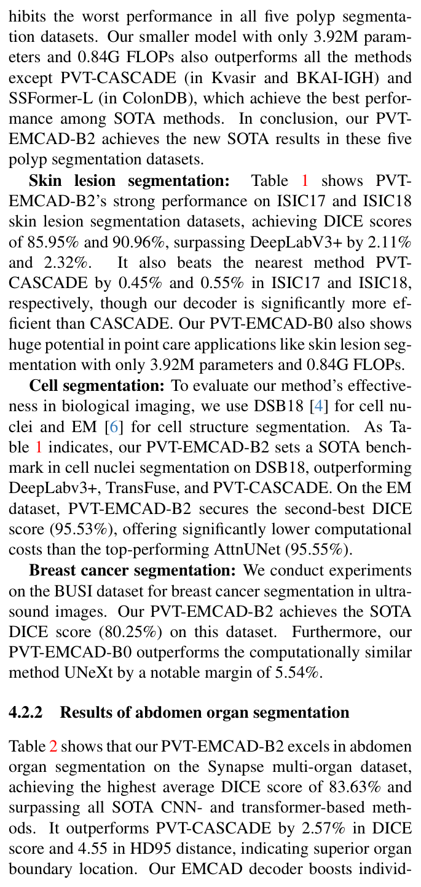
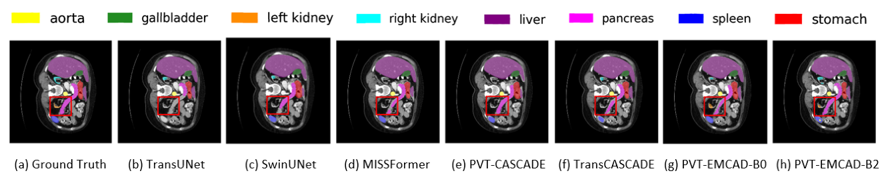
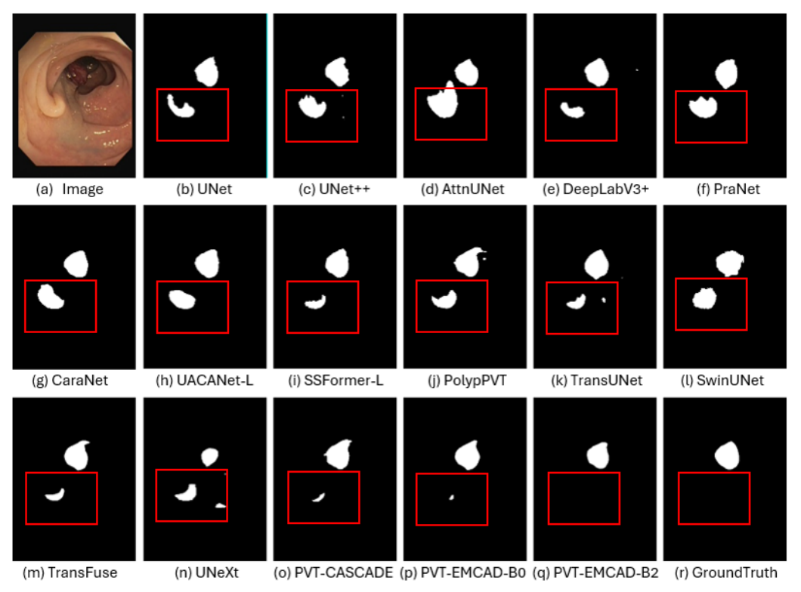

用多尺度深度可分离卷积与门控注意力重构解码路径，在六大医学分割任务的 12 个数据集上取得 SOTA 精度，同时参数量与 FLOPs 分别降低 79.4% 与 80.3%。
以「通道注意力 → 空间注意力 → 多尺度卷积块」级联精炼编码器各阶段特征，多尺度处均使用深度卷积，计算量显著低于 CASCADE 的 CAM。
用 3×3 分组卷积处理门控信号与输入特征，在更大局部上下文中生成门控信号，三个门参数从 124.68K 降到 11.01K，精度反而更高。
标准编码器下解码器仅需 1.91M 参数与 0.381G FLOPs，比 CASCADE 降低 79.4% 参数与 80.3% FLOPs，DICE 反而更高。
实验表明：EMCAD 在六大医学分割任务的 12 个数据集上取得 SOTA 精度，可搭配任意层级化编码器即插即用。
以 CASCADE 为代表，每个解码阶段使用三个 3×3 标准卷积层，计算效率低，难以部署到算力受限的真实医疗场景（如床旁即时检测）。
解码时只用单尺度卷积，无法同时捕获多尺度上下文信息，既不够高效，也不够多尺度。
研究缺口：暂未有解码器能在多尺度局部注意力建模与极低计算开销之间同时做好，既能配合任意层级化编码器即插即用，又能在多类医学分割任务上保持 SOTA 精度。

3×3 分组卷积让门控信号在更大的局部上下文中决定「看哪里」，分组与深度化设计把代价压得比逐点卷积更低。三个门合计参数从 124.68K 降到 11.01K，精度反而从 83.51% 升到 83.63%。
MSCAM(x) = MSCB(SAB(CAB(x)))
级联顺序：通道筛选 → 空间定位 → 多尺度增强；多尺度处均使用深度卷积，计算量显著低于 CASCADE。






息肉预测与真值掩码高度重叠，现有 SOTA 在红框区域出现错误分割
用多尺度深度卷积加通道混洗替代 CASCADE 的三重标准卷积，以少 79.4% 参数与 80.3% FLOPs 反超基线 DICE，为解码器提供可复用的轻量化范式。
LGAG 用 3×3 分组卷积重构注意力门，三个门参数从 124.68K 降到 11.01K 精度反而更高，展示了以低价换上下文的设计思路。
六大任务 12 个数据集、五次运行取均值、五组消融加定性可视化，结论互相印证，说服力强。